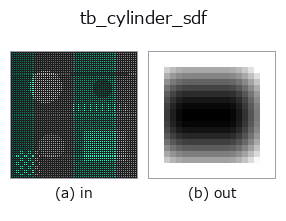

typed op• データ種: points → volume
• 呼び出し: fullseye.apply(img, "tb_cylinder_sdf", a=0.5, b=0.5) (2-D は 1 画像 + 2 スカラつまみ a,b∈[0,1] のモデル)

*図は合成の入力 128×128 で実際に走らせた出力。左が入力、右が出力。点群は上から見た散布(明るさ = z)、1-D 列は折れ線、体積は z 方向の最大値投影、動画は中央フレーム、複素画像は振幅、絵にならない返り値は値そのもの。*
*つまみ a は出力を変えない(実測: 0.1 / 0.5 / 0.9 で同一)。*
*つまみ b は出力を変えない(実測: 0.1 / 0.5 / 0.9 で同一)。*
段階(前置きの op → この op。左から順):
▸ tb_cylinder_sdf: stages (docs site)
別の画像でも(合成シーン / 写真 / 硬貨。上段が入力、下段がその出力。つまみは既定):
▸ tb_cylinder_sdf: other inputs (docs site)
動き(GIF: フレーム / 視点 / スライスを順に。静止の図が完成形で、GIF は補助):
有限長の円柱(両端が平らな蓋)の厳密な符号付き距離場(内側負・外側正)。
軸方向の距離 `t と軸からの半径 r に分け、q = (r - radius, |t| - height/2)`
として `outside = ‖max(q, 0)‖、inside = min(max(q), 0)、sdf = outside + inside`。
これは `box_sdf` と同じ Quilez 流の構成を「(半径, 軸)の 2-D 断面」に適用したもので、
側面・蓋・角(縁)のいずれに対しても真のユークリッド距離になる。
引数と検証(`ValueError`):
• `grid: 最終軸が 3 の float 配列 (..., 3)`。
• `center`: 円柱の中心(端面ではなく重心。要素数 3)。
• `axis`: 軸の向き(要素数 3、零ベクトル・NaN は拒否。長さは自動正規化)。
• `radius: 半径 > 0 相当のスカラ(0` は軸線そのもの、負は拒否)。
• `height: 全長のスカラ(center` から ±height/2。負は拒否)。
返り値: `grid.shape[:-1]` の float64。
使いどころ: **貫通穴は `sdf_subtract(part, cylinder_sdf(...))**(height` を部品より
長くして端面の縁を残さない)。ボス・ピン・シャフトは `sdf_union`。無限長の円柱が
要るなら `height` を十分大きく取る(端面が評価域の外に出れば側面だけが効く)。
2-D 進化レジストリへ橋渡しした 3d の op `cylinder_sdf。実装は同じで、呼び出し規約だけ op(v, a, b) に合わせてある。この op に調整点は無く、a も b` も使われない。
• サンプルデータ カタログ(DL URL / ライセンス) — 2-D は skimage.data(BSD/public)+ 合成、3-D は実データ源(Stanford/PDS 等)の DL URL。
• 演算子の来歴・参考文献 — この op 族の元になった研究/手法の出典。
下のプログラムは実際に走ることを確かめてある(図と同じ入力)。Studio のヘルプではこのブロックがボタンになり、その場で読み込んで実行できる。
img_to_points 0.50 0.50 tb_cylinder_sdf 0.50 0.50
▸ Load this pipeline · Load & run
次の例は元の台帳 op cylinder_sdf を呼ぶもの。この橋渡し op は同じ実装を fn(v, a, b) 規約に合わせただけなので、挙動はそのまま当てはまる(呼び出し形だけ違う)。
• sdf_csg — py -3.11 examples_3d/sdf_csg.py
volume を入力に取れる)identity · vol_gaussian · vol_median · vol_erode · vol_dilate · vol_threshold · vol_reg_dilate · vol_reg_erode
typed)tb_points_to_voxel · tb_estimate_point_normals · tb_iss_keypoints · tb_angle_3points · tb_project_points · tb_render_point_depth · tb_statistical_outlier_removal · tb_radius_outlier_removal
*Provenance: ops.py — 2D operator registry. この per-op ノートは tools/opdocs.py md が自動生成(手編集しない)。*
© 2026 Kazufumi Furuse — Fullseye operator documentation. Licensed under Apache-2.0.
{kind=link}
{kind=link}